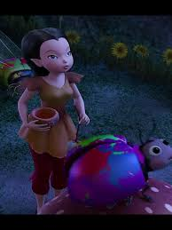

Ladybugs are born completely blank and without spots. They get their spots when animal-talent fairies manually paint the black dots on their backs, or when the fairies use Tinker Bell's paint sprayer invention to spray-paint the spots on the bugs.